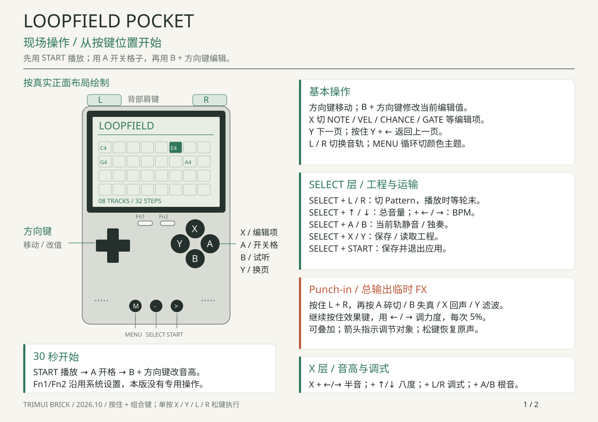
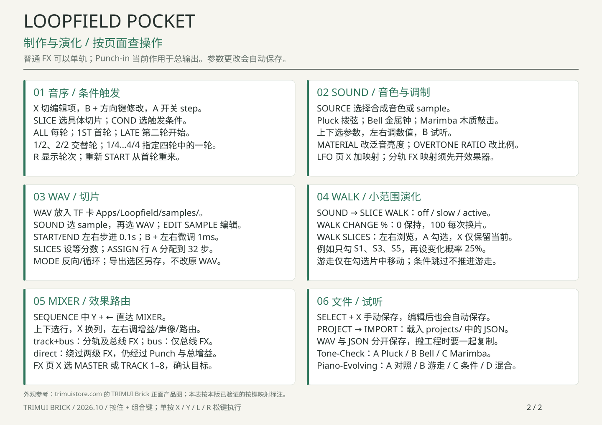

<!doctype html><html lang="zh-CN"><meta charset="utf-8"><title>Loopfield Pocket · Brick Cheat Sheet</title><style>body{margin:0;padding:24px;background:#ddd;font-family:system-ui}main{max-width:1440px;margin:auto}img{display:block;width:100%;margin:0 auto 24px;box-shadow:0 4px 24px #0002}nav{margin-bottom:20px}a{color:#285e4a}@media print{@page{size:A4 landscape;margin:0}body{padding:0}nav{display:none}img{width:100%;height:100vh;object-fit:contain;break-after:page;box-shadow:none;margin:0}}</style><main><nav><a href="Loopfield-Brick-Cheat-Sheet.pdf">下载两页 PDF</a> · SVG 可编辑；页面可直接打印</nav></main></html>